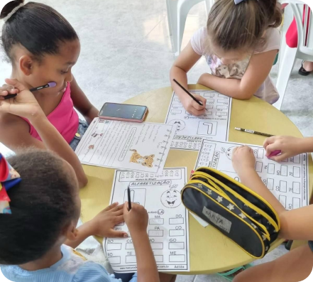

Sobre nosso trabalho
O Instituto Um Passo de Cada Vez conta com uma equipe de voluntários dedicados e comprometidos em ajudar as crianças da comunidade da Pavuna a terem acesso à educação de qualidade. A equipe é formada por profissionais de diversas áreas, que oferecem seu tempo e conhecimento de forma voluntária para apoiar o trabalho do instituto.
Os voluntários são o coração do instituto e são responsáveis por ministrar as aulas de reforço escolar, as atividades extracurriculares e os projetos educacionais oferecidos pela organização. Atualmente o instituto trabalha com aulas de Reforço Escolar, Alfabetização, Inglês, Tecnologia da Informação e Libras.
Juntos, a equipe de voluntários e a diretoria do Instituto Um Passo de Cada Vez trabalham em sinergia para garantir que as crianças da comunidade da Pavuna tenham acesso à educação de qualidade e possam desenvolver seu potencial máximo. Eles são um exemplo de comprometimento e solidariedade, contribuindo para a construção de uma sociedade mais justa e igualitária.
O Instituto tem como nobre missão consolidar uma rica e variada grade semanal de aulas abrangendo diversas áreas do conhecimento. Para alcançarmos esse objetivo grandioso, contamos com o apoio imprescindível de voluntários e patrocinadores engajados em nossa causa.
Quem somos
Uma das principais atividades realizadas pelo instituto é o reforço escolar, que ajuda as crianças a melhorar seu desempenho acadêmico e a compreender melhor os conteúdos ensinados em sala de aula. As aulas são ministradas por voluntários capacitados e engajados, que dedicam seu tempo e conhecimento para ajudar as crianças a superarem suas dificuldades e a alcançarem seus objetivos.
Além do reforço escolar, o instituto também oferece atividades extracurriculares, como aulas de música, dança, artes plásticas e informática, que ajudam as crianças a desenvolver habilidades pessoais e criativas. Essas atividades são importantes para o desenvolvimento integral das crianças e para a formação de cidadãos conscientes e engajados.
O trabalho do Instituto Um Passo de Cada Vez é essencial para a comunidade da Pavuna, pois oferece às crianças e adolescentes oportunidades de desenvolvimento pessoal e educacional que muitas vezes não seriam possíveis sem o apoio da organização.

Seja um Patrocinador
Ser um patrocinador do Instituto Um Passo de Cada Vez significa investir na educação e no desenvolvimento de crianças e adolescentes da comunidade da Pavuna. Como patrocinador, você pode contribuir financeiramente ou com outros recursos para apoiar nossas atividades e projetos.